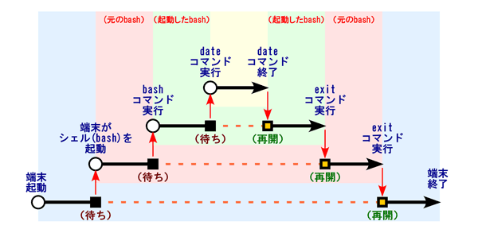

端末 (gnome-terminal) のウィンドウを開いたときに実行されるシェル (bash) 自体も，ひとつのコマンドです．したがって，これをコマンドとして実行することもできます．まず，この bash をコマンドとして起動してみましょう．
| コマンドとして bash を起動してみる |
|---|
$ bash[Enter] $ ←何も起こらなかったように見える |
多分，何も起こらなかったように見えます．実際には，もとの bash とは別の bash が動いています．でも，コマンドとして起動した bash も bash に変わりありませんから，端末が起動する bash と同様，コマンドの入力を待ちます．
| コマンドで起動した bash で他のコマンドを使ってみる |
|---|
$ date[Enter]
2014年 6月 19日 木曜日 13:31:09 JST
|
bash を終了するには exit コマンドを実行します．
| exit コマンドで bash を終了する |
|---|
$ exit[Enter] $ ←やっぱり何も起こらなかったように見える |
これはコマンドで起動した bash を終了します．この bash が終了すると，もとの bash がコマンドを待っている状態になります．だから，やっぱり何も起こらなかったように見えます．そこで，元の bash も終了してみます．先ほどと同様に exit コマンドを実行します．
| もう一度 exit コマンドを入力してみる |
|---|
$ exit[Enter]
|
この exit コマンドの実行によって，端末のウィンドウが閉じて (消えて) しまいます．これは端末が起動したシェル (bash) の終了をずっと待っており，シェルが終了すると端末自身も終了するように作られているからです．

なお，exit コマンドを実行する代わりに Ctrl-D をタイプしても，シェルを終了できます．Ctrl-D は入力データの終了を表しますから，これによりコマンドの入力がそれ以上行われないことをシェルに伝えることができます．言い換えれば．利用者が入力するコマンドは，シェルにとっては入力データというわけです．
シェルへのコマンド入力がシェルにとっては入力データに他ならないなら，シェルに入力するコマンドを一旦ファイルに記録しておいて，それをシェルの入力に与えることもできるはずです．通常，シェルでコマンドをタイプして改行すれば，その都度そのコマンドが実行されます．
| シェルでコマンドを連続して実行してみる |
|---|
$ date[Enter] 2014年 6月 19日 木曜日 14:27:12 JST $ cal[Enter] 6月 2014 日 月 火 水 木 金 土 1 2 3 4 5 6 7 8 9 10 11 12 13 14 15 16 17 18 19 20 21 22 23 24 25 26 27 28 29 30 $ pwd[Enter] /home/sys/s123456 |
そこで，実行するコマンド名を，ファイルに書き込んでみます．cat コマンドの標準出力をファイル a にリダイレクトして，ファイル a にキーボードから入力した内容を保存します．
| cat コマンドを使ってファイルの中にコマンド名を書き込んでみる |
|---|
$ cat > a[Enter] date[Enter] cal[Enter] pwd[Enter] Ctrl-D |
そのファイルの内容を，cat コマンドの標準入力にリダイレクトします．ファイル a の内容が画面に表示されます．矢印 "<" の方向を間違わないようにしてください．
| ファイル a の内容を見てみる |
|---|
$ cat < a[Enter]
date
cal
pwd
|
今度はそのファイル a の内容を，bash コマンドの入力データに使ってみます．ファイル a を bash コマンドの標準入力にリダイレクトします．矢印 "<" の方向を間違わないようにしてください．
| ファイル a の内容を bash の入力に流し込んでみる． |
|---|
$ bash < a[Enter] (何か出力される) |
さて，どういうことが起こったでしょうか．シェルのコマンドをキーボードからではなくファイルから与えることによって，一連のコマンドを連続して実行することが可能になります．これは同じ作業を繰り返す場合などに便利です．なお，cat コマンドは入力データに使うファイルを引数で指定することもできます ("<" が省略できます)．
| cat コマンドの入力ファイルを引数で指定する |
|---|
$ cat a[Enter]
date
cal
pwd
|
シェルも cat と同様に，入力するファイル名を引数で指定することができます ("<" が省略できます)．
| bash コマンドの入力ファイルを引数で指定する |
|---|
$ bash a[Enter] (何か出力される) |
このように実行するコマンドを順に書き込んだテキストファイルを作れば，コマンドをその順に続けて実行することができます．さらに，そのファイルの先頭でコマンドを解釈するシェルを明示し，そのファイルに実行権を与えれば，そのテキストファイル自体を新しいコマンドとして使えるようになります．このようなファイルをシェルスクリプトと呼びます．bash 用のシェルスクリプトは，bash スクリプトと呼びます．
テキストエディタを使って，hello.bash という名前の bash スクリプトを作成します．emacs を使う場合は，以下のようにします．".bash" という拡張子は付ける必要はないのですが，bash のスクリプトであることを明示するために，一応付けておきます．
| emacs を使ってシェルスクリプト hello.bash を作成する |
|---|
$ emacs hello.bash &[Enter]
|
このファイルの内容は，次のようにします．最初の行の "#!" によって，そのシェルスクリプトを解釈するシェルを指定します (シェルには bash のほかに sh や csh，ksh，zsh などがあります)．上のシェルスクリプトでは /bin というディレクトリにある bash コマンドによって解釈しますから，それを絶対パスで指定します．詳しくは man bash を読んでください．
#!/bin/bash date cal pwd
このファイルを保存したら，それに実行許可を与えます．実行許可を追加するには chmod コマンドを使います．
| bash スクリプト hello.bash を実行可能にする | |
|---|---|
$ chmod +x hello.bash[Enter]
|
|
これで bash スクリプト hello.bash をコマンドとして実行することができます．ファイルの保護モードに x が追加されたことを確認してください．
| hello.bash の保護モードに x が追加されたことを確認する |
|---|
$ ls -l hello.bash[Enter]
-rwxr-xr-x 1 s123456 students 27 6月28日 13:44 hello.bash
|
このスクリプトを実行します．カレントディレクトリにあるスクリプトを実行するので，ファイル名の頭に "./" を付けます．
| hello.bash の実行 |
|---|
$ ./hello.bash[Enter] (何か出力される) |
"./hello.bash" はカレントディレクトリ (.) にある hello.bash を実行するということです．ちゃんと実行できたでしょうか？
変数はプログラム中でデータを一時的に保持する入れ物です．プログラミング言語において，変数は最も基本的で重要な要素です．これまでに述べたようにシェルもプログラミング言語としての側面を持っていますから，変数を活用すれば，さらに柔軟な処理を行うことが可能になります．また一部の変数は，シェル自身の動作を制御するためにも使用されます．シェルで使われる変数には，そのシェルスクリプト内だけで使われるシェル変数と，他のシェルスクリプトやプログラム (コマンド) と共有される環境変数の二つがあります．
echo コマンドはシェルスクリプトで非常によく使われるコマンドです．これは引数をそのまま標準出力に出力します．
| echo コマンドは引数をそのまま出力する |
|---|
$ echo Hello[Enter]
Hello |
ワイルドカード * はカレントディレクトリにある (隠されていない) すべてのファイル名にマッチしますから，echo コマンドの引数に * を指定すると，カレントディレクトリにあるファイルの一覧が表示されます．
| ワイルドカード * を echo コマンドの引数に指定する |
|---|
$ echo *[Enter] カレントディレクトリにあるファイル名が全部表示される |
シェル変数に値を代入 (格納) するには，"=" を使います．"=" の両側にはスペースを開けないでください．
| 使ってシェル変数 name に値を代入する |
|---|
$ name=ichiro[Enter] |
変数の値を参照する (取り出す) には，変数名に "$" を付けます．
| 変数の内容を参照するには変数名に "$" を付ける |
|---|
$ echo $name[Enter]
ichiro |
echo コマンドには，複数の引数を指定できます．また，"$" がついていないものは，単に文字列として扱われます．
| echo コマンドは複数の引数を指定できる |
|---|
$ echo My name is $name.[Enter]
My name is ichiro. |
文字列が空白を含むときは，引用符号 ("～" や '～') でくくります．引用符号は日本語の入力モードを抜けてから入力してください．
| 文字列が空白を含むときは，"～" や '～' でくくる |
|---|
$ my="My name is"[Enter] $ echo $my $name.[Enter] My name is ichiro. |
"～" (ダブルクォーテーションマーク) でくくった場合，間にある "$" は変数の参照として扱われるため，それに続く文字列は変数の内容で置き換えられます．
| "～" の間にある変数は内容で置き換えられる |
|---|
$ echo "$my $name."[Enter]
My name is ichiro. |
一方 '～' (シングルクォーテーションマーク) でくくった場合，間にある "$" はそのまま出力されます．
| '～' の間にある $ はそのまま出力される |
|---|
$ echo '$my $name.'[Enter]
$my $name. |
複数の変数に同時に代入ができます．
| 複数の変数への代入ができる |
|---|
$ v1=10 v2=20[Enter] $ echo $v1 $v2[Enter] 10 20 |
他の変数の値を代入することもできます．
| 他の変数の値を参照して代入できる |
|---|
$ v3=$v1+$v2[Enter] $ echo $v3[Enter] 10+20 |
空白を含む場合は " (ダブルクォーテーションマーク) ではさんでください．
| 空白を含む場合はダブルクォーテーションマークで挟む |
|---|
$ v3="$v1 + $v2"[Enter] $ echo $v3[Enter] 10 + 20 |
変数に代入する値が数値なら，let コマンドを使って代入の時に計算ができます．この場合も "+" の両側に空白を入れないでください．
| let コマンドで変数への代入の時に計算する |
|---|
$ let v3=$v1+$v2[Enter] $ echo $v3[Enter] 30 |
let コマンドを使う時も，代入するものが空白を含む場合は " (ダブルクォーテーションマーク) ではさんでください．
| let コマンドでも空白を含むならダブルクォーテーションマークで挟む |
|---|
$ let v3="$v1 + $v2"[Enter] $ echo $v3[Enter] 30 |
なお，引数を式とみなして計算する expr というコマンドもあります．この場合は引数と引数の間 ('+' の前後など) は空白で区切る必要があります．
| expr コマンドを使って引数の式を計算する |
|---|
$ expr $v1 + $v2[Enter]
30 |
シェル変数の中には，シェルの動作の制御などに使われるものがあります．
シェルにおいても，入力の終了 (EOF = End of File) を示す Ctrl-D をタイプすると，シェルが終了してしまいます．端末を起動して，そのシェルで Ctrl-Dをタイプしてみてください．
| シェルで Ctrl-D をタイプしてみる |
|---|
$ Ctrl-D |
シェルが終了し，おそらく端末のウィンドウが閉じてしまうと思います．これを防ぐためには IGNOREEOF (ignore EOF = EOF を無視する) というシェル変数を設定します．もう一度端末を起動して，そのシェルで IGNOREEOF 変数に値を設定します．
| もう一度端末を起動してシェル変数 IGNOREEOF を設定する |
|---|
$ IGNOREEOF=3[Enter] |
ここで，試しに Ctrl-Dをタイプしてみてください．
| また Ctrl-D をタイプしてみる |
|---|
$ Ctrl-D
シェルから脱出するには "exit" を使用してください。 |
今度は exit コマンドを使うよう警告が出ます．exit コマンドを使えば，シェルを終了することができます．あるいは，上の例では IGNOREEOF に 3 を設定したので EOF (Ctrl-D) を３回無視しますから，４回タイプすればシェルが終了します．
| exit コマンドで bash が終了する |
|---|
$ exit[Enter] |
bash を終了したので，端末のウィンドウが閉じてしまいます．もう一度端末を開いてください．
今度はプロンプト (入力促進符号，シェルがコマンド待ちであることを示す記号，ここでは $ のこと) を変えてみましょう．プロンプトは PS1 というシェル変数を使って設定します．引用符号 ("～" や '～') は日本語の入力モードを抜けてから入力してください．また = の両側にはスペースを入れないでください．
| PS1 変数に値を代入してみる． |
|---|
$ PS1="なんやねん "[Enter] なんやねん ←これがプロンプト |
プロンプトには様々な情報を含めることができます．例えばプロンプトの文字列に含まれる "\w" はカレントディレクトリ名に置き換わります．なお，"＼" (バックスラッシュ) は，画面やキーボード上では"￥" (円記号) で表示されることがあります．また "~" (チルダ) はホームディレクトリを表します．
| プロンプトにカレントディレクトリを含める |
|---|
なんやねん PS1="\w >"[Enter] ~ >cd /usr/bin[Enter] /usr/bin >cd[Enter] ~ > |
"\!" はイベント番号 (後述の history 機能で保存されているコマンドの履歴の番号) に置き換わります．
| プロンプトにイベント番号を含める |
|---|
~ >PS1="$~ \!> "[Enter] ~ 6> echo $PS1[Enter] $~ !> ←"\"自体は残らない ~ 7> ←コマンドを実行するたびに数が増える |
シェル変数が有効なのは，そのシェル内でのみです．シェル変数の設定をそのシェルから起動したシェルスクリプトやコマンド (プログラム) に引き継ぐには，それを環境変数に登録します．環境変数はオペレーティングシステム自体の機能です．
シェル変数を環境変数に登録するには export コマンドを使います．
| シェル変数 X を環境変数にする |
|---|
$ X=10[Enter] $ export X[Enter] |
これは次の１行でも実行できます．
| 環境変数 X に 10 を設定する |
|---|
$ export X=10[Enter]
|
環境変数の値を参照する (取り出す) 場合も，変数名に "$" を付けます．
| 環境変数 X の値を参照する |
|---|
$ echo $X[Enter]
10
|
env コマンドまたは printenv コマンドによって，設定されている環境変数の一覧を表示できます．
| 環境変数の一覧を見る |
|---|
$ printenv[Enter] (環境変数の一覧が表示される) $ env[Enter] (環境変数の一覧が表示される) |
テキストエディタを使って，今度は hensu.bash という名前の bash スクリプトを作成します．emacs を使う場合は，以下のようにします．
| emacs を使ってシェルスクリプト hensu.bash を作成する |
|---|
$ emacs hensu.bash &[Enter]
|
このファイルの内容は，次のようにします．
#!/bin/bash echo $HENSU
このファイルを保存したら，それに実行許可を与えます．
| bash スクリプト hello.bash を実行可能にする |
|---|
$ chmod +x hensu.bash[Enter]
|
これで bash スクリプト hensu.bash をコマンドとして実行することができます．このスクリプトを実行してみます．
| hensu.bash を実行する |
|---|
$ ./hensu.bash[Enter] ← 何も出力されない |
変数 HENSU はシェルスクリプト hensu.bash 内では設定されていませんから，このシェルスクリプトを実行しても何も出力されません．そこで，今使っているシェルでシェル変数 HENSU に値を設定してみます．
| set コマンドでシェル変数 HENSU に値を設定する |
|---|
$ HENSU=10[Enter] |
しかし，これでも hensu.bash は何も出力しません．
| もう一度 hensu.bash を実行する |
|---|
$ ./hensu.bash[Enter] ← やっぱり何も出力されない |
そこで export コマンドを使って，シェル変数 HENSU を環境変数に組み込みます．
| export コマンドで環境変数 HENSU に値を設定する |
|---|
$ export HENSU[Enter] |
これで hensu.bash を実行します．こんどは環境変数 HENSU に設定した値が出力されます．
| さらにもう一度 hensu.bash を実行する |
|---|
$ ./hensu.bash[Enter]
10
|
実行するコマンドの左に変数への代入を置いて，コマンドに受け渡す環境変数を直接指定することもできます．このとき，もともとの環境変数の値は変化しません．
| 環境変数を消去する |
|---|
$ HENSU=30 ./hensu.bash[Enter] 30 $ echo $HENSU[Enter] 10 ←もともとの環境変数の値は変わらない |
通常使うコマンドは，/usr/bin など，どこか他のディレクトリに収められています．コマンドを実行するには，それが収められている場所も含めて指定する必要があります．しかし，それではコマンドが長くなりすぎるので，PATH という環境変数にコマンドのサーチパスを設定して，どこにあるコマンドを使うのかを指定しています．
| date コマンドを実行してみる |
|---|
$ date[Enter]
2014年 6月 19日 木曜日 14:30:45 JST
|
date コマンドはカレントディレクトリにはなく，どこか別のところにありますが，コマンド名を指定するだけで実行することができます．どのコマンドが実行されたのかは，which コマンドで確認できます．
| which コマンドでどのコマンドを実行したのか調べる |
|---|
$ which date[Enter] /bin/date ←date コマンドは /bin ディレクトリにある |
コマンドのサーチパスが設定していなければ，コマンドを実行する際にパス (相対パス，絶対パス) を明示する必要があります．
| コマンドを絶対パス名で指定する |
|---|
$ /bin/date[Enter]
2011年 6月 30日 木曜日 14:31:22 JST |
カレントディレクトリにあるファイルも，サーチパスにカレントディレクトリが含まれていなければ，ファイル名 (コマンド名) だけでは実行できません．
| サーチパスに含まれないところにあるコマンドは実行できない |
|---|
$ hello.bash[Enter]
hello.bash: コマンドが見つかりません．
|
しかし，その場合もコマンドのパス (相対パス，絶対パス) を指定すれば実行することができます．
| パスを指定してコマンドを実行する |
|---|
$ ./hello.bash[Enter] (先ほど作った hello.bash が残っていれば何か出力される) |
コマンドのサーチパスは環境変数 PATH に設定されています．
| 環境変数 PATH の内容を表示する |
|---|
$ echo $PATH[Enter]
/usr/local/bin:/usr/bin:/sbin:/bin
|
この中にはカレントディレクトリを示す "." (ピリオド) が含まれれていません．そこで，試しに環境変数 PATH にカレントディレクトリ "." を含めてみます．
| 環境変数 PATH に . (ピリオド) を追加する |
|---|
$ PATH=$PATH:.[Enter]
|
その後，環境変数 PATH の内容を確認してみます．
| 環境変数 PATH の内容を確認する |
|---|
$ echo $PATH[Enter]
/usr/local/bin:/usr/bin:/sbin:/bin:.
|
環境変数 PATH に "." (ピリオド) が含まれているはずです．この設定では，カレントディレクトリにある hello.bash を，パスを明示せずに実行できます．
| もう一度 hello.bash を実行してみる |
|---|
$ hello.bash[Enter] (何か出力される) |
コマンドのサーチパスにはピリオドを含めないWindows の「コマンドプロンプト」ではカレントディレクトリにあるコマンドを実行するようになっていますが，Unix/Linux ではそれはデフォルトでは避けるようになっています (コマンドのサーチパスにピリオドを含めない)．これは cd した場所にある (自分が知らない) コマンドを不用意に実行してしまわないようにするためです． このために，カレントディレクトリにあるファイルを実行するときには，ファイル名の頭にカレントディレクトリを表す相対パスの "./" を付けます．
set コマンドを単独で (オプションや引数を付けずに) 実行すると，シェル変数などのシェルの設定の一覧を表示します．
| シェルの設定の一覧を見るには set コマンドを単独で実行する |
|---|
$ set[Enter] (シェル変数などのシェルの設定の一覧が表示される) |
コマンドの標準出力をファイルにリダイレクトしたとき，リダイレクト先のファイルが既に存在すれば，そのファイルの以前の内容は消えて，リダイレクトしたデータに置き換わってしまいます．リダイレクトによって間違ってファイルの内容を消してしまわないようにするには，set コマンドに -o noclobber というオプションをつけて実行します (clobber = 不注意な上書きによるデータ破壊)．
端末を開いて，シェルで echo コマンドを使って，ファイル a に何かデータを入れてみます．
| echo コマンドを使ってファイル a に「かばやねん」を入れる |
|---|
$ echo かばやねん > a[Enter] $ cat a[Enter] ←cat コマンドで内容を確認する かばやねん ←元の内容 |
このファイル a に，echo コマンドで別のデータを入れてみます．
| echo コマンドを使ってファイル a に「たこやねん」を入れる |
|---|
$ echo たこやねん > a[Enter] $ cat a[Enter] ←cat コマンドで内容を確認する たこやねん ←書き替わってしまった |
ファイル a の内容は後からリダイレクトした内容に置き換わってしまいます．そこで set コマンドに -o noclobber を付けて実行します．
| set コマンドに -o noclobber オプションを付けて実行する |
|---|
$ set -o noclobber[Enter] |
その後，先ほどと同様に echo コマンドの標準出力をリダイレクトします．
| echo コマンドを使ってもう一度ファイル a に「いかやねん」を入れてみる |
|---|
$ echo いかやねん > a[Enter] bash: a: 存在するファイルを上書きできません ←エラーメッセージ $ cat a[Enter] ←cat コマンドで内容を確認する たこやねん ←書き替わっていない |
このように，今度はエラーになってしまいます．ファイルの内容を強制的に上書きするには，">|" を使ってリダイレクトします．
| ">|" を使うと無理やり入れることができる |
|---|
$ echo いかやねん >| a[Enter] ←エラーにならない $ cat a[Enter] ←cat コマンドで内容を確認する いかやねん ←書き替えられた |
シェル変数や環境変数を消去するには unset コマンドを使います．
| unset コマンドを使ってシェル変数を消去する |
|---|
$ unset v1 v2 v3[Enter] $ echo $v1[Enter] (何も表示されない) |
PS1 変数を消去すると，シェルのプロンプトが現れなくなります．
| PS1 変数を消去する |
|---|
$ unset PS1[Enter] ←プロンプトが表示されない |
IGNOREEOF 変数を消去すると，Ctrl-D でシェルが終了するようになります．
| IGNOREEOF 変数を消去する |
|---|
$ unset IGNOREEOF[Enter] Ctrl-D (シェルが終了するためウィンドウが閉じる) |
プログラミングなどをしていると，何度も同じコマンドを入力することがよくありますが，コマンドが長かったりすると結構面倒です．bash には以前に入力したコマンドを記録しておく機能がありますので，それを使って以前のコマンドを再利用できます．これを history (履歴) 機能と言います．history 機能はデフォルトで有効になっていますが，無効になっているときは set コマンドに -o history というオプションを付けて実行します．
history コマンドに引数を付けずに実行すると，記録しているコマンドの一覧を表示します．
| history コマンドでこれまでに入力したコマンドの一覧が表示される． |
|---|
$ history[Enter] 1 PS1="なんやねん " (中略) 17 history |
Ctrl-P や ↑ で以前に入力したコマンドを呼び出すことができます．
| "!!" で直前に実行したコマンドを再度実行する |
|---|
$ !![Enter] history ←再実行するコマンドが表示される |
"!イベント番号" で指定したイベント番号のコマンドを再実行できます．
| イベント番号 1 のコマンドを再度実行する． |
|---|
$ !1[Enter]
set prompt="なんやねん "
なんやねん
|
"!文字列" で最近に実行した文字列で始まるコマンドを再実行できます．
| 最近に実行した "ec" で始まるコマンドを再度実行する |
|---|
なんやねん !ec[Enter]
echo $prompt
なんやねん
|
Ctrl-R でコマンドの履歴を検索できます．
| 最近に実行した "ec" で始まるコマンドを再度実行する |
|---|
なんやねん Ctrl-R (reverse-i-serch)`': echo $PS1 ←ec だけ打てば残りが現れる なんやねん |
履歴を記録するコマンドの数は，シェル変数 HISTSIZE に設定します．
| 履歴を記録するコマンドの数はシェル変数 HISTSIZE に設定する |
|---|
なんやねん HISTSIZE=10000[Enter]
|
alias (エイリアス) コマンドを使って，コマンドに別名をつけることができます．以下のコマンドを実行すれば，それ以降 ll で ls -l が実行されます．
| "ls -l" に ll という別名を付ける |
|---|
$ alias ll='ls -l'[Enter] $ ll[Enter] |
rm コマンドは，実行すると，いきなりファイルを消してしまいます．また，消したファイルを復元することもできません．
| rm コマンドは有無を言わさずにファイルを消す |
|---|
$ touch xxx[Enter] ←適当なファイル xxx を作る $ rm xxx[Enter] $ ←何も言わずにファイルを消してしまう |
rm コマンドに -i というオプションを付ければ，ファイルを削除する際に確認します．消すなら y，消さないなら n を入力します．
| rm コマンドに -i を付けてファイルを削除する |
|---|
$ touch xxx[Enter] ←適当なファイル xxx を作る $ rm -i xxx[Enter] rm: remove `xxx'? y ←一応聞いてくれる |
しかし，rm コマンドを使うたびに，毎回 -i オプションを指定するには面倒ですし，忘れる可能性もあります．そこで alias 機能を使って，rm コマンドが必ず -i オプション付きで実行されるようにします．
| rm で必ず "rm -i" が実行されるようにする |
|---|
$ alias rm='rm -i'[Enter]
|
この後 rm コマンドを使ってファイルを削除してみます．必ず確認するようになります．
| alias による rm コマンドを使ってファイルを削除する |
|---|
$ touch xxx[Enter] ←適当なファイル xxx を作る $ rm xxx[Enter] rm: remove `xxx'? y ←こんどは -i を付けなくても聞いてくれる |
alias の設定を解除するには，unalias コマンドを使います．
| unalias コマンドで alias の設定を解除する |
|---|
$ unalias ll[Enter] $ ll .*[Enter] ll: コマンドが見つかりません. |
なお，set / unset コマンドや let コマンド，history コマンド，alias / unalias コマンドなどは bash の組み込みコマンドと呼ばれ，bash 自身が処理しています．したがって ls のように独立したコマンドはありません．
history 変数の設定や alias の設定などは，bash を終了すると失われてしまいます．ホームディレクトリの .bashrc というファイルに書いたコマンドは，シェルの起動時，利用者のコマンドの入力を待つ前に実行されるため，これを使って初期設定をすることができます．なお，.bashrc に誤った設定を行うとシェルが正常に使用できなくなることがありますので，設定には細心の注意を払ってください．
テキストエディタを使って，ホームディレクトリに .bashrc というファイルを作成してください．emacs の場合は，次のようにします．
| emacs を使って bash の初期設定ファイル .bashrc を作成する |
|---|
$ cd[Enter] ←一旦ホームディレクトリに戻る $ emacs .bashrc &[Enter] |
.bashrc の内容は，例えば次のようにしてください．rm 同様 cp や mv コマンドにも -i オプションを付けることをお勧めします．これにより cp や mv でファイルをコピー／移動する先に同名のファイルがある場合に，上書きの可否を確認します．
HISTSIZE=10000 IGNOREEOF=3 set -o noclobber alias rm='rm -i' alias cp='cp -i' alias mv='mv -i'
なお，この読み込みは bash の起動時にしか行われないので，.bashrc の設定は新たに開いた端末で有効になります．現在使っているシェルでその設定を有効にするには source コマンドあるいは . (ピリオド１個）を使います．
| .bashrc の読み込み |
|---|
$ source .bashrc[Enter] （あるいは） $ . .bashrc[Enter] |
.bashrc は bash の起動時に自動的に読み込まれるので，.bashrc を変更しなければ，source コマンドを使用する必要はありません．
rm, cp, mv を -i オプション付きで起動することについてalias によって rm, cp, mv を -i オプション付きで起動することについては，「効果がない」「より大きな失敗を引き起こす場合がある」など，否定的な意見も見られます．ですが，少なくとも私はこの設定によって何回も救われているので，ここでお勧めしています．しかし，これを採用するかどうかは,，自分の判断でお願いします．
次の (1)～(2) の作業を行い，それぞれの結果と (3) の内容をメールで tokoi@sys.wakayama-u.ac.jp に送ってください．メールの件名 (Subject) は shori1-11 にしてください．期限は次週の水曜日中までです．